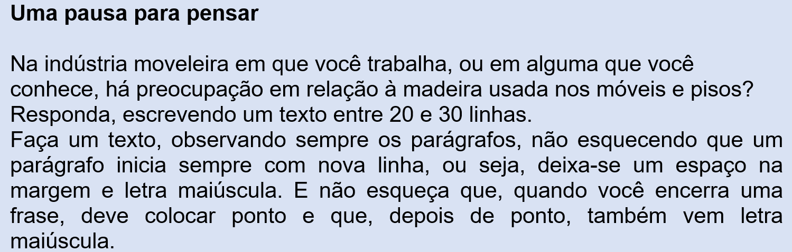

Capítulo 1: Certificação na indústria de mandeira/mobiliário
Questão-problema:
Você sabe qual o tipo de madeira utilizado na fabricação de móveis? A matéria-prima da indústria que você trabalha possui a certificação FSC?
Observe a publicidade abaixo:
Reconstruindo conhecimentos:
Cada vez mais, a preocupação com a conservação da natureza no que diz respeito à água e às florestas é crescente.
A fim de conservar o que levou séculos – e até milênios – para se desenvolver, hoje se plantam árvores como o pinus e o eucalipto (plantas de crescimento rápido) para confecção de móveis. Na publicidade acima, o “protagonista” da propaganda é a madeira com certificado FSC que significa Forestry Stewardship Council; em português significa Conselho de Manejo Florestal.
A certificação FSC é um sistema de garantia internacionalmente reconhecido, que identifica, através do seu selo, produtos madeireiros e não madeireiros originados do bom manejo florestal. As normas de madeira controlada do FSC têm como objetivo orientar as empresas certificadas a evitarem produtos com origem florestal de categorias consideradas inaceitáveis pelo FSC. E o que não é aceitável?
• Madeira extraída ilegalmente
• Madeira extraída em Infração aos Direitos civis e Tradicionais
• Madeira extraída de florestas em que os Altos Valores de Conservação estão ameaçados pelas atividades de manejo
• Madeira extraída de Áreas Convertidas de Florestas para plantações e outros usos não florestais
• Madeira de florestas com Árvores Geneticamente Modificadas
O FSC aprovou em Assembleia Geral (Malásia, 2011) a Moção 51, na qual os Escritórios Nacionais do FSC devem desenvolver avaliações nacionais de risco (ANR) para consumo de madeira controlada em seus países. Uma vez aprovada, a ANR de um país se torna mandatória para a região em questão, prevalecendo em relação às análises de risco anteriormente feitas pelas organizações certificadas.

O que fazer em momentos de desastre? Em março de 2017, aconteceu um tornado na cidade gaúcha de São Francisco de Paula. Em poucos minutos, casas desabaram, árvores entortaram-se, caíram sobre carros, uma pessoa morreu e algumas se feriram. A cidade, desabada, emudeceu triste com a tragédia. O texto em questão fala de terremotos, dos que acontecem na natureza, na nossa realidade objetiva, e daqueles terremotos subjetivos quando a gente pensa que nosso mundo acabou. Nos dois casos, o autor nos aconselha o que fazer quando somos acometidos por desastres. Vale a pena ler e aprender as lições que ele nos dá.
Ruína nos dá liçoes de vida
(Affonso Romano Sant’Anna)
Desabam prédios no centro da cidade do México num estrondoso terremoto. Racham pias, os espelhos se partem, água escura irrompe das paredes e tudo começa a afundar. Na rua os carros balançam igual gelatina, começa uma chuva apocalíptica de vidros e depois tijolos, ferro e pó, até que a morte se esconda sob os escombros. Mas a todo instante nos chegam notícias de que bebês sobreviveram seis dias sob os destroços, casais resistiram sob os entulhos, e outros, apesar de desabarem inteiramente com os edifícios, chegaram ao solo, intatos. Então é lícito pensar que, embora muitos pereçam, a ruína nos dá lições de vida. Pois desabam os casamentos, os negócios, a saúde e os regimes, mas não se sabe de onde nem por que milagre surgem forças, propiciando o resgate e nos livrando do total aniquilamento. Todos já estivemos e estaremos em algum terremoto. Um terremoto é quando a paisagem nos trai. Um terremoto é quando se quebrou a solidariedade entre o seu ponto de vista e as coisas. Um terremoto não é só quando o caos demoniacamente toma conta do cosmos. Um terremoto, eu lhe digo o que é: é a hora da traição da natureza. Ou da traição também dos homens, se quiserem. Um terremoto, minha amiga, é quando, como agora, você está se separando. Você me diz de soslaio, como que saindo, querendo-e-não-querendo conversar, você vai me dizendo que seu casamento está desmoronando. Você está embaixo da pele, com a voz meio sepultada lançando um grito de socorro, e aqui com a equipe de salvamento lhe posso apenas lançar a frase: a ruína nos dá lições de vida. Terremoto é a hora da traição do amigo que, invejoso, concorre como inimigo e lança fel onde a amizade era mel, e envenena a rima de seus dias sendo Caim em vez de Abel. Por isto, há que afixar conselhos sobre a hora do terremoto. Como nos abrigos antiatômicos, nas indústrias do perigo, há que adiantar as medidas a serem tomadas quando o terremoto vier. Daí o primeiro conselho em caso de tal tragédia: não entre em pânico acima do tolerável. Lembre que todo terremoto é passageiro. Porque este é o sortilégio dos terremotos: nenhum terremoto é permanente, embora muitos e tanta coisa nele pereçam para sempre. Mesmo os mais profundos e autênticos cataclismos não duram mais que pouquíssimos, embora diabólicos, minutos. Vai ser terrível, mas vai passar. Outro conselho: embora rápido e fulminante, nada garante que ele não torne a se repetir. Há que estar atento também para o fato de que esse movimento de terra é interior e exterior. O que desabou por cima não é tudo. É sintoma apenas do que se moveu por baixo. Naqueles terremotos do México, depois do primeiro e do segundo, as agências noticiaram um outro, mas que foi apenas subterrâneo. Diziam: é a acomodação das camadas geológicas. Incômoda acomodação é essa. Mas um terremoto autêntico vem mesmo das profundas, e a superfície só vai se acalmar quando as camadas geológicas lá dentro se ajeitarem de novo. Sobretudo, depois do terremoto há que aprender com as ruínas. Por que os engenheiros que me perdoem, mas a ruína é fundamental. É a hora do retorno. E se vocês me permitissem discretamente citar Heidegger, com ele eu diria que a ruína só é negativa para aquele que não entende a necessidade da demolição. Pois a tarefa do homem é refazer-se a partir de suas ruínas. Temos mais é que catar os cacos do caos, catar os cacos da casa, catar os cacos do país. Depois da demolição das fraudes, desmontando a aparência do ontem, poderemos nos erguer na luminosidade do ser. Ruína, neste sentido, não é decadência. Ao contrário: é a hipótese do soerguimento. As ruínas do presente nos ensinam que um terremoto é quando não há mais o centro das coisas. E no México foi o centro, o centro do centro, a capital, que foi arrasada. Mas aprendendo com a ruína, ali já nos prometem o verde. Já tracejam planos de jardins onde crianças e flores povoarão o amanhã. Amigo, amiga: terremotos ocorrem sempre, e muitos aí perecem. Mas a função do sobrevivente é sobreviver reconstruindo. A ruína, além da morte, nos dá lições de vida.
(Fonte: http://www.armazem.literario.nom.br/vejaquempassouporaqui/32_afonsodesantanna.htm)
Praticando - Reflexão e ação
1. Proposta de produção textual - Como disse Affonso Romano Sant’Anna, terremotos ocorrem sempre, mas a função do sobrevivente é reconstruir. A esta capacidade de superar as vicissitudes da vida, chamamos de resiliência, um substantivo abstrato feminino. O adjetivo correspondente é resiliente, a qualidade de alguém que tem a capacidade de se recobrar facilmente ou se adaptar à má sorte ou às mudanças da vida.
Partindo do significado de que todos nós já sofremos um “terremoto” na vida, isto é, já vivemos momentos terríveis em que pensamos que a dor sofrida pelo baque nos desmontaria e jamais nos ergueríamos de novo, aqui estamos de alguma forma sobrevivendo.
Narre o que lhe aconteceu – pode ter sido uma tempestade, um vendaval, um tornado, uma enchente – ou, então, uma separação amorosa, uma humilhação, uma perda emotiva. Conte o que você fez para conseguir superar as dificuldades e como você está agora, o que você aprendeu.
Escrever também faz bem para nossa alma. Não quer dizer que vamos esquecer o que nos aconteceu, mas é uma forma de “passar a limpo” o acontecimento, colocando as coisas no lugar em que elas merecem estar.
Observe que seu texto terá três partes: o fato ocorrido, a superação do fato e sua condição atual. Cada parte formará – no mínimo – um parágrafo, isto é, um conjunto de frases.
2. No enunciado “Racham pias, os espelhos se partem, água escura irrompe das paredes e tudo começa a afundar” os verbos estão no tempo
(a) presente do modo indicativo.
(b) pretérito perfeito do modo indicativo.
(c) pretérito imperfeito do modo indicativo.
(d) pretérito mais-que-perfeito do modo indicativo.
(e) gerúndio.
3. Leia o excerto: “Mas a todo instante nos chegam notícias de que bebês sobreviveram seis dias sob os destroços, casais resistiram sob os entulhos, e outros, apesar de desabarem inteiramente com os edifícios, chegaram ao solo, intatos.” A palavra “intatos” significa que
(a) chegaram ao solo levemente feridos.
(b) chegaram ao solo apenas machucados.
(c) chegaram ao solo sem nenhum arranhão.
(d) chegaram ao solo sem roupa.
(e) chegaram ao solo totalmente vivos.
4. Reescreva as duas frases, substituindo a palavra embora por “apesar de”
a) E, embora muitos pereçam, a ruína nos dá lições de vida.
b) Nenhum terremoto é permanente, embora muitos e tanta coisa nele pereçam para sempre.
5. Quantas palavras você precisou alterar no exercício número 4?
(a) Uma.
(b) Duas.
(c) Três.
6. Leia o excerto: “Mas aprendendo com a ruína, ali já nos prometem o verde. Já tracejam planos de jardins onde crianças e flores povoarão o amanhã.”
O verbo em negrito anuncia o tempo:
(a) Presente
(b) Passado
(c) Futuro
7. Vamos exercitar um pouco a lógica da dedução. Apresentarei uma espécie de jogo. Você, antes de responder à pergunta, deve descobrir a relação existente entre as duas primeiras palavras de cada questão, pois a resposta deve ter a mesma lógica encontrada. Exemplo:
Assinale a alternativa correta:
Se vitória tem relação com triunfo, obrigação tem relação com
( ) compromisso ( ) desordem ( ) derrota
A relação entre “vitória” e “triunfo” é de sinonímia. Então, a relação existente entre a palavra “obrigação” deve ser a mesma. A resposta correta é “compromisso”.
Agora, faça o mesmo com as questões a seguir:
1. Se quente tem relação com frio, mole tem relação com
( ) doce ( ) leve ( ) duro
2. Se dourado tem relação com ouro, luz tem relação com
( ) lustre ( )luzes ( ) lâmpada
3. Se dia tem relação com diurno, noturno tem relação com
( ) nota ( ) nata ( )noite
4. Se segredar tem relação com proclamar, gritar tem relação com
( ) berrar ( ) murmurar ( ) calar
5. Se abelha tem relação com enxame, estrela tem relação com
( ) planeta ( ) constelação ( ) cruzeiro
6. Se livro tem relação com livreiro, sapato tem relação com
( )sapataria ( ) calçado ( ) sapateiro
7. Se verbo tem relação com oração, frase tem relação com
( ) sujeito ( ) acento ( ) palavra
8. Se fricção tem a relação com violino, sopro tem relação com
( ) piano ( ) clarineta ( ) violão
9. Se relógio tem relação com tempo, espaço tem relação com
( ) mapa ( ) terra ( ) carta
10. Se afirmar tem relação com declarar, indeferir tem relação com
( ) dizer ( ) negar ( ) concordar
11. Se mãe tem relação com filha, filho tem relação com
( ) pai ( ) irmão ( ) irmão
12. Se gaúcho tem relação com RS, fluminense tem relação com
( ) BA ( ) CE ( ) RJ
13. Se falante tem relação com EU, TU tem relação com
( ) ouvinte ( ) você ( ) assunto
14. Se eu tem relação com comigo, ele tem relação com
( ) contigo ( ) com ele ( ) consigo
15. Se mínimo tem relação com pequeno, ínfimo tem relação com
( ) menor ( ) alto ( ) maior
16. Se bom tem relação com mau, bem tem relação com
( ) melhor ( ) pior ( ) bem
17. Se acender tem relação com fogo, ascender tem relação com
( ) fogão ( ) subida ( ) descida
O que aprendi:
- Revisão de conteúdos gramaticais tratados em fases anteriores.
- Proposta de produção textual.
- Jogo linguístico de lógica dedutiva.